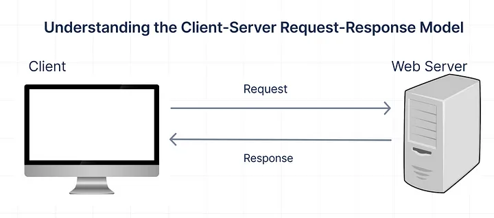
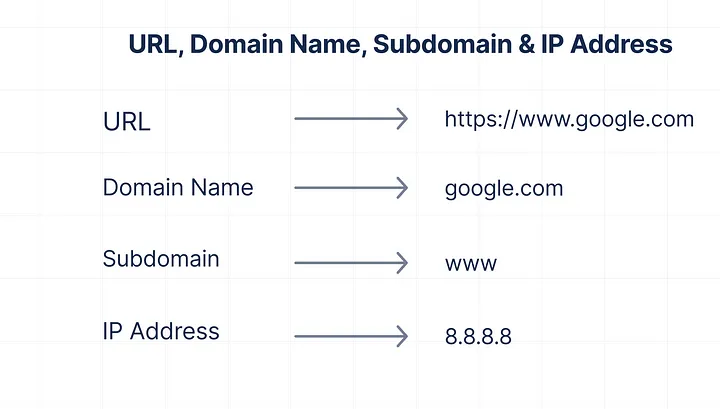
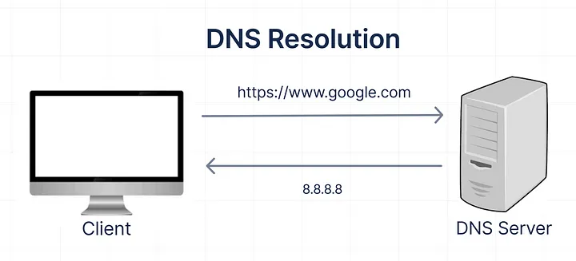
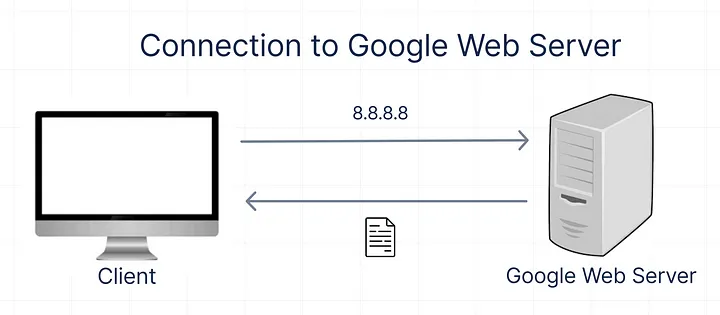
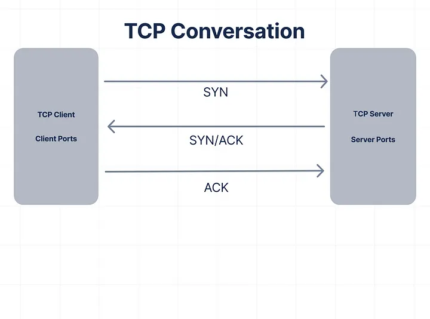
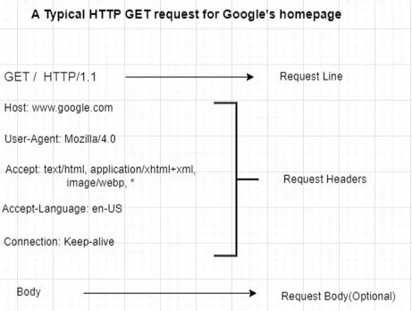

What happens when you type 'https://www.google.com' in your browser
and press 'Enter'?
Have you ever wondered what happens when you pick up your phone or
computer, open your browser — be it Chrome, Firefox, Safari, or
another — and type in “https://www.google.com"? It seems almost
magical: you press “Enter,” and the Google homepage appears almost
instantly. But hold up — while we're busy thinking it's instant
internet magic, a lot is happening behind the scenes. It's like
expecting a pizza to appear in your hands after you hit 'order now' —
if only it were that simple, right?
Imagine a team of busy little robots running around, finding IP
addresses, making secure connections, and moving data super fast, all
to make sure you can instantly look up why dogs tilt their heads.
Sounds interesting? This write-up will break down the fascinating
series of events that take place to make this possible, including DNS
resolution, establishing a secure connection, HTTP requests, the role
of load balancers, firewalls, web servers, application servers,
databases, and finally, rendering and displaying the page. Well,
buckle up, because we're about to dive into how it all works below!

DNS Resolution
The process of DNS resolution involves converting a domain name or
hostname (such as google.com)
into an IP address (such as 8.8.8.8). It converts a human-readable
domain name into its corresponding IP address so that your browser can
locate and access the website.
When you type “https://www.google.com" into your browser , the first
thing your browser does is check its cache to see if it already knows
the IP address for Google. You might be wondering, what a cache and an
IP address are. Well, a cache is like your browser's little notepad
where it jots down addresses it's visited recently so that it can find
them faster next time. Every device on the Internet has its unique IP
address, which is essential for locating that device — just like a
room number helps you find a specific room in a large hotel. As
mentioned earlier, a common example of an IP address is 8.8.8.8. This
particular IP address belongs to Google's public DNS service.

Unluckily, if your browser does not know the IP address for Google it
needs to find out the IP address, which is where DNS (Domain Name
System) comes in. Think of DNS as the internet's phonebook. Your
browser sends a request to a DNS server to find out what IP address
corresponds to “google.com”. This request can travel through several
DNS servers, each passing it along until the correct IP address is
found. Once your browser gets the address, it knows where to send your
request next.

TCP Connection
Once the IP address is known, your browser initiates a TCP
(Transmission Control Protocol) connection to Google's web server at
that IP address.

TCP ensures reliable communication by managing the connection setup,
data transfer, acknowledgment, and termination processes. Imagine a
phone call between two people who want to have a conversation. In TCP,
this is like the process of setting up a connection. Your computer
makes sure the other computer, which hosts Google's server, is
available and ready to talk before starting the conversation. This
involves a three-way handshake process:
1. SYN: Your browser sends a synchronized packet to Google's server to
start the connection
2. SYN-ACK: The server then responds with a synchronize-acknowledgment
packet.
3. ACK: Your browser sends an acknowledgment packet back to the
server.

After a successful connection, data is transferred in segments. When
you type https://www.google.com in your browser and hit enter, your
request is broken down into smaller data segments. Each segment
includes a sequence number that helps in reordering the segments at
the destination if they arrive out of order. TCP uses a mechanism
called windowing to control the flow of data. It ensures that the
sender does not overwhelm the receiver by sending more data than it
can handle. Each segment also includes a checksum to detect errors in
the data. If a segment is corrupted, it is retransmitted.
Further, for each data segment received, the receiving computer (in
our case, Google's server) sends an ACK back to the sender. This
acknowledgment indicates that the segment was received correctly. If
the sender does not receive an acknowledgment within a certain time,
it will retransmit the segment. TCP uses retransmission timers to
detect and recover lost packets by sending them again.
So, the data sent in segments includes the requests we make when
typing a URL like https://www.google.com. TCP ensures that these
requests are delivered reliably and in the correct order, making sure
that we get the web pages we want to access smoothly and efficiently.
The connection remains open until the page has been fully rendered.
TLS Handshake
Since you are accessing the site via HTTPS (a secured version of
HTTP), a TLS (Transport Layer Security) handshake occurs to establish
a secure connection. TLS is an encryption and authentication protocol
designed to secure Internet communications. This involves exchanging
cryptographic keys and verifying the server's certificate (usually
signed by a trusted Certificate Authority such as Let's Encrypt,
GoDaddy, Entrust and many more). SSL, or Secure Sockets Layer, was the
original security protocol developed for HTTP. It has since been
superseded by TLS, or Transport Layer Security. Nowadays, the process
formerly referred to as SSL handshakes is called TLS handshakes,
although the term “SSL” remains widely used.
TLS 1.3, the latest version of the Transport Layer Security protocol,
brings a major speed boost with its handshake process. Unlike earlier
versions that required multiple exchanges between the client and
server — known as round trips — TLS 1.3 can complete the handshake
with zero round trips. This means that the secure connection is
established almost instantly, speeding up the process and improving
security.
Here's a simple bonus: If you've visited the Google website before,
the client and server can use a special shared key from the first
visit, called the “resumption main secret.” During that first visit,
the server gives the client a session ticket. When you return to the
website, your browser can use this key and ticket to quickly set up
the secure connection again without starting from scratch. This makes
reconnecting faster and more seamless.
HTTP Request
After your browser resolves the IP address through DNS and establishes
a secure connection using TLS, it's time for the next step: making an
HTTP GET request. Your browser sends an HTTP GET request to the server
which includes the request lines (HTTP method, the path to the
resource, etc.) the request headers that provide information about the
client (browser type, language, etc.), and the request body (optional
section here as it is mainly used in POST requests to send data to the
server, such as form submissions).
Here's what an HTTP GET request might look like:

Firewall
Before your request reaches Google's web server, it first passes
through a firewall. It's important to dwell on firewall because it
plays a crucial role in ensuring the security of web interactions.
Think of the firewall as a security checkpoint. Its job is to screen
incoming requests to make sure they are safe and legitimate.
Imagine you're trying to enter a secure building. The security guard
checks your ID and questions why you're there. If everything looks
good, you're allowed inside. Similarly, the firewall inspects each
request for signs of malicious activity or unauthorized access
attempts.
For example, if someone tries to send harmful code or exploit
vulnerabilities, the firewall blocks those requests. Only the safe and
authorized requests make it through to Google's web server. This helps
protect Google's servers from potential threats and ensures that your
visit to https://www.google.com is secure.
Load Balancer
Once the secure connection is established, finally, your request
reaches Google's load balancer. It's also important to talk about this
step because load balancers play a crucial role in managing internet
traffic. They act like traffic directors, distributing incoming
requests across multiple servers to ensure no single server becomes
overwhelmed. This helps improve resource use, reduce delays, and
increase reliability. The load balancer decides which server will
handle your request based on factors like how busy each server is, the
health of each server, and where the server is located geographically.
After considering all these factors, it then sends your request to one
of Google's web servers.

Web Server
Once the load balancer has directed your request to a specific server,
the server begins processing it to determine what content to send
back, in this case, the Google homepage. The server retrieves the
necessary data to display Google's homepage. This includes fetching
the HTML, images, and other static resources that make up the main
page.
Application Server
After the request passes through the firewall and reaches Google's web
server, it is handed off to the application server. The application
server is crucial for managing more complex tasks beyond serving
static files and resources. It plays a key role in turning the static
resources provided by the web server into a fully functional and
customized webpage. Here's a breakdown of its role:
1. Running Dynamic Code: The application server executes scripts and
programs that generate dynamic content. For example, when you visit
https://www.google.com, the application server might run code to
customize the homepage based on your location or preferences, even
though you're not performing a search.
2. Handling Business Logic: It processes the business logic required
to build the web page. For instance, the application server manages
how different elements on the homepage are arranged and ensures that
interactive features, like language settings or theme preferences,
work correctly.
3. Managing Sessions: If you have an active session or cookies from
previous visits, the application server checks these to provide a
personalized experience. It might adjust what you see on the homepage
based on your past interactions with Google.
4. Communicating with the Database: Although the homepage might not
need extensive data from the database, the application server is
responsible for fetching or updating information as needed. For
example, if the homepage includes personalized content, the
application server might retrieve relevant data from Google's
database.
5. Preparing the Response: After processing the request and running
the necessary code, the application server collaborates with the
webserver to prepare the HTTP response. This response includes the
final content to be sent back to your browser.
Database
Database plays a crucial yet often behind-the-scenes role when you
visit Google's homepage. In essence, it holds a wealth of information
necessary for various features and services. This might include
storing user preferences, session information, and any data relevant
to personalization. Although you're just visiting the homepage, the
database can provide personalized content if you have cookies or a
logged-in session.
For instance, if Google tailors its homepage based on your location or
language preferences, the application server queries the database to
fetch and display this information. Moreover, if you've interacted
with Google services before, the database keeps track of your settings
and preferences, so when you visit the homepage, the application
server might retrieve this data to ensure a consistent and
personalized experience.
HTTP Response
After processing the request and running the necessary code, the
application server collaborates with the webserver to prepare the HTTP
response, which includes:
1. Status Code: A number indicating the result of your request (e.g.,
200 OK for success, 404 NOT FOUND if the page doesn't exist).
2. Headers: Information about the response, such as:
• Content-Type: The type of content being sent (e.g., HTML,
JSON).
• Content-Length: The size of the content.
• Set-Cookie: Instructions for your browser to store cookies.
3. Body: The actual content you requested (the HTML of Google's
homepage).
Rendering and Displaying the Page
Once your browser receives the HTTP response from Google's servers, it
begins the process of rendering and displaying the Google homepage.
The browser starts by parsing the HTML content from Google's server.
This HTML includes the structure of the Google homepage, such as the
search box, Google logo, and buttons. The browser constructs the
Document Object Model (DOM), a tree-like structure representing these
elements. Each HTML element, like the search bar and buttons, becomes
a node in the DOM, providing a framework for the browser to understand
and manipulate the content.
As the browser parses the HTML, it identifies links to additional
resources such as CSS stylesheets, JavaScript files, and images. For
the Google homepage, this might include styles for the search box and
images for the Google logo. The browser sends requests to fetch these
resources, ensuring that the complete set of components needed to
display the page is available.
The browser then parses the CSS files it retrieved to build the CSS
Object Model (CSSOM). The CSSOM defines how the elements in the DOM
should be styled. For example, it will include styles for the search
box's appearance, the alignment of the Google logo, and the layout of
buttons. This model works with the DOM to apply these styles
correctly.
Combining the DOM and CSSOM, the browser creates the render tree. This
tree includes all visible elements, like the Google search bar and
logo, and their corresponding styles. Elements that are not visible,
such as hidden ads or elements with display: none, are excluded from
this tree.
The browser calculates the size and position of each element on the
render tree, a step known as layout or reflow. For Google's homepage,
this means determining where the search box, logo, and buttons will
appear on the screen. Further, it arranges these elements based on
factors like the size of the viewport and the dimensions of other
elements.
With the layout complete, the browser starts painting. This step
involves rendering the visual aspects of the page, such as applying
colors, borders, and backgrounds. For Google's homepage, the browser
paints the search bar in its designated color, displays the Google
logo, and styles the buttons as specified.
If there are JavaScript files or inline scripts on the homepage, the
browser executes them. For example, JavaScript might manage
interactive features like the search button's functionality or handle
user interactions. This script can also make the page more dynamic by
updating content or reacting to user actions.
Once the rendering process is complete, the browser displays the fully
constructed and styled webpage. You see the fully styled and
functional page, including the search bar, Google logo, and buttons.
The page appears as intended, with all elements in their proper places
and ready for use.
TCP termination typically occurs after the web page has been fully
rendered, as mentioned above. Once the browser has received all
necessary data segments to complete the web page, the connection is
closed using a four-way handshake process:
1. FIN: The client's computer sends a FIN (finish) packet to indicate
that it has finished sending data.
2. ACK: The server responds with an ACK to confirm it received the FIN
packet.
3. FIN: The server then sends its own FIN packet to indicate it has
finished sending data.
4. ACK: The client responds with an ACK to confirm it received the
server’s FIN packet. After this, the connection is fully closed.
As you interact with the homepage, such as typing a query into the
search box or clicking the “Google Search” button, the browser may
send additional requests to Google's servers. These interactions can
trigger new HTTP requests to process your search query or navigate to
other pages, continuing the dynamic nature of the browsing experience.
Google's homepage may include features that update in response to your
actions, such as dynamic search suggestions or updates to the page
layout. The browser handles these updates smoothly, ensuring that the
page remains responsive and engaging throughout your interaction.
In sum, when you visit https://www.google.com, a complex sequence of
technological processes works behind the scenes to display Google's
homepage on your device. Initially, your browser translates the domain
name into an IP address through DNS resolution. It then establishes a
secure connection with Google's servers using TLS. Once the secure
connection is set up, your browser sends an HTTP request to Google's
servers. This request is handled by a load balancer that distributes
incoming traffic across multiple servers, optimizing performance and
reliability.
The web server processes the request, possibly interacting with an
application server and a database to retrieve or manage data needed to
generate the homepage. A firewall plays a crucial role throughout this
process by protecting the servers from unauthorized access and
potential threats, ensuring that only legitimate requests are
processed. After the request is processed, your browser begins
rendering the page. This involves parsing the HTML, fetching
additional resources, and building the visual representation of the
page. Finally, the fully rendered Google homepage is displayed on your
screen, allowing you to interact with it. This entire process, from
initial request to final display, involves multiple layers of
technology and security measures that work together to provide a
seamless and secure browsing experience.
Thank you for taking the time to read this article and explore the
fascinating journey that happens behind the scenes when you visit
Google's homepage. I hope this insight into web technology has been
both informative and engaging!
Written by Yusuf Mustapha Opeyemi. July 22, 2024.
Sources